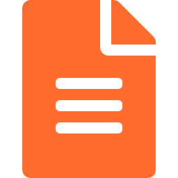
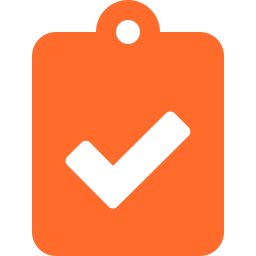
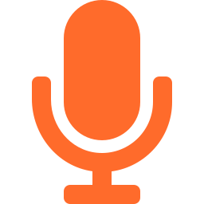

Resume Builder
Step-by-step guided CV creation with SA-specific templates, ATS keyword suggestions, and real-time scoring

Resume Analyzer
Upload existing CV and receive AI-powered analysis with ATS score, skill gap identification, and improved version generation
Cover Letter Generator
AI-crafted cover letters tailored to each job application, with multiple tone options and auto-populated from resume data

AI Interview Coach
Voice-enabled mock interviews with real-time AI feedback, context-aware questions based on your resume, and scoring